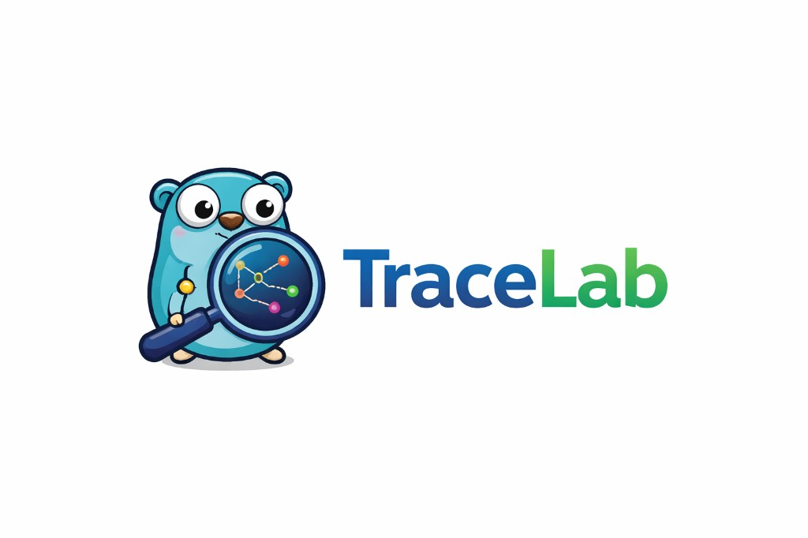
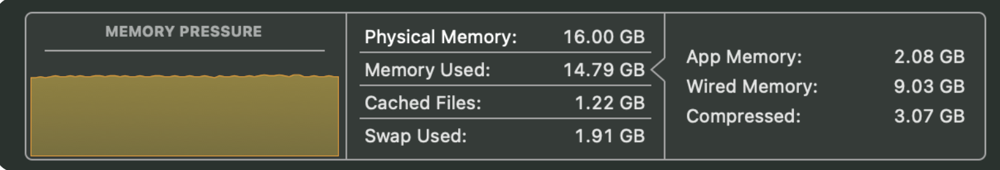

About
I'm a software engineer who cares deeply about well-designed systems, accessible pixel-perfect interfaces, and clean, maintainable architecture. I'm drawn to problems where thoughtful design and strong engineering intersect, building experiences that are performant, intuitive, and resilient. I've been in the industry for six years, mostly in full-stack engineering. My focus is shifting to AI systems engineering, working on the system front to back, from security and infrastructure to how AI fits into real workflows.
At Bear Cognition, I develop data-driven logistics applications, including Outlook add-ins that provide clear visibility into shipments and offers so users can confidently place and win bids. My work spans React-based interfaces, LangGraph and Python pipelines for email processing, and MongoDB for durable data workflows.
I've built software across environments ranging from large enterprises like Charles River Laboratories to fast-moving product teams, optimizing data models, designing scalable applications, and bringing structure to complex systems. I care deeply about clarity in code, long-term maintainability, and architecture that enables teams to move quickly without sacrificing quality.
Experience
-
Aug 2025 — Present Software Engineer · Bear Cognition
Delivering data-driven applications with Python (FastAPI), Nuxt, and AWS. Building robust backend services and interactive frontends for complex data analytics platforms.
-
Python
-
FastAPI
-
Nuxt
-
AWS
-
-
Apr 2023 — Mar 2025 Senior Software Developer · Charles River Labs
Led end-to-end development of the Data & Findings RESTful API for Apollo, ensuring alignment with functional requirements and delivering real-time access to study data for over 20,000 study directors.
-
RESTful API
-
Observer Pattern
-
Optimization
-
-
Mar 2021 — Apr 2023 Software Developer · Southern Crown Partners
Developed a serverless React application to optimize inventory logistics, enabling real-time tracking and reducing annual out-of-code product loss by $200,000, by translating business needs into specific technical requirements.
-
React
-
Serverless
-
AWS Lambda
-
-
Aug 2018 — Mar 2021 R&D Software Developer · College of Charleston
Developed MARS Mapmaker, a React-based CSV mapping tool that automated the processing of thousands of geochronological data lines by enabling CSV imports, UI-based key-value modifications, and JavaScript file generation.
-
React
-
Data Processing
-
Projects
-
TraceLab March 2026
TraceLab is a web app for going deep on a wide range of computer science topics, not just system design. Each area pairs clear explanations with code when it helps and interactive visuals so you can actually trace what is going on. I am building it as a one-stop shop for learning CS. Check it out · Intro post.
-
React
-
TypeScript
-
Vite
-
Go

-
-
SlopSniff March 2026
A small Python CLI on PyPI that scans repos for quality drift: oversized files and functions, duplicate bodies, and helper sprawl. It scores findings and can fail CI when slop crosses a threshold you set. Not about calling out AI; it’s about catching patterns that pile up when everyone moves fast. Full write-up in the blog.
-
Python
-
CLI
-
CI/CD
-
-
Load Agent December 2025
At Bear Cognition, I built Load Agent to help shippers and 3PLs win bids. In 3PL (Third-Party Logistics), bids are competitive proposals (RFPs/RFQs) where providers submit pricing, capacity, and service levels for transportation or warehouse fulfillment—covering everything from spot rates and mini-bids to annual contracts. Load Agent gives users clear visibility into shipments and offers so they can confidently place and win those bids.
See more
Users send an email to a webhook address; the payload is processed and stored in MongoDB. When they open the Outlook add-in, the load details load from that data. They call an API to retrieve offers, select one, then book the shipment and send BOLs (Bills of Lading)—all without leaving Outlook.
-
LangGraph
-
React
-
MongoDB
-
-
Apollo Data & Findings API November 2024
At Charles River Laboratories, I led the end-to-end development of the Apollo Data & Findings API, a Node.js-based REST platform that delivered real-time clinical study data to more than 20,000 study directors and clinical pathologists. Apollo centralized complex research data and made it immediately actionable for teams monitoring animal health and study outcomes.
See more
The platform tracked the full lifecycle of preclinical studies—daily food consumption, weight trends, clinical observations, dosing schedules, and overall health indicators. Accuracy and speed were critical: pathologists relied on this data to detect anomalies early and make decisions that could impact study timelines and research integrity.
On the backend, we structured the service layer to aggregate and normalize data before it reached the client, so responses were shaped for direct use in frontend components. That minimized client-side processing and rendering overhead and gave frontend teams a predictable interface for data-heavy dashboards. We focused on query performance, payload design, and service boundaries to support high-throughput access without sacrificing reliability. By treating the API as a product, we enabled research teams to move faster while staying confident in the underlying data.
-
RESTful API
-
Clinical Data
-
Microservices
-
Blog
This is where I learn in public. Architecture, shipping product, the messy bits. When I figure something out I try to write it down. It might help someone else, definitely helps me.
-
TraceLab: From Open Atlas IPs to VPC, NAT, and a Static Egress IP
March 2026
VPC, NAT, and a static egress IP for Atlas—then a separate twist: the API image had no system CA bundle, so TLS to Atlas failed even when networking was right.
Projects GCP MongoDB VPC Cloud NAT Cloud Run SecurityEarly on, TraceLab’s Atlas project had the usual development shortcut: network access wide open so anything could reach the cluster while I iterated. That is fine until it is not. I wanted the same app on managed Cloud Run to talk to Mongo with a predictable egress identity and no world-open allowlist.
The shape of the fix is standard GCP networking: a VPC you already have, then a subnet sized for Cloud Run (a /26 in the region where the service lives), a Cloud Router, a regional static external IP, and Cloud NAT so traffic from that subnet leaves through that one address. On deploy, attach the service to the VPC and subnet and route outbound through the VPC (for example
--vpc-egress all-trafficongcloud run deploy) so database traffic does not bypass NAT. After deploy, take the reserved IP, add it in Atlas network access, wait until it is active, then remove the open-to-the-world entry. Order matters so you do not lock yourself out.I sanity-checked egress with a tiny “what IP do I see?” style check against a public IP echo service; it should match the NAT address. The VPC firewall prompts you sometimes see are about VM-to-VM paths; this path is Cloud Run through NAT to the internet, not east-west between VMs.
Even with NAT and allowlisting correct, Mongo still would not come up cleanly. Raw TCP was fine, the egress IP matched what Atlas expected, but the Go driver never finished replica set discovery: errors along the lines of servers unknown,
ReplicaSetNoPrimary, and context deadline exceeded. That pointed away from routing and toward TLS.The API container was built on
gcr.io/distroless/static-debian12. That image is minimal on purpose, and it does not ship the system CA certificate bundle. Atlas requires TLS, and the driver needs trusted roots in the image to validate Atlas’s certificate. The fix was switching the runtime image togcr.io/distroless/base-debian12:nonroot, which includes the CA store, so TLS verification succeeded and the client could complete discovery.So the failure that looked like “Mongo from Cloud Run is broken” had two layers: the networking and access story was still worth doing for real (static egress, tight allowlist, no wide-open IP list). The immediate root cause of the TLS handshake not completing was missing CA certificates in the distroless static image—not a bad VPC, NAT, or connection string.
Net: keep the VPC/NAT pattern for how you present to Atlas, and treat minimal base images as a checklist item whenever you terminate TLS inside the container. Next steps when you want more than IP rules are still things like Private Service Connect or stronger auth at the data plane.
-
Opus, DRY, and a Hundred Components That Should Have Been One Pattern
March 2026
I asked a top-tier model for help and got the same React component twenty different ways instead of a config-driven design. The cleanup was brutal and instructive.
Architecture LLM React FundamentalsI leaned on the latest Opus-class model for a batch of React work. What came back looked fine in isolation: each file rendered, types mostly lined up, reviews could pass if you squinted. The catch was structural. It had effectively built the same component over and over, maybe twenty variations, instead of stepping back and asking what was shared. DRY was not on the menu. A human architect would have reached for props, a map, or a small schema long before the twentieth paste.
I kept the useful bits and threw away the repetition. The real fix was boring in a good way: BSON documents in MongoDB, one config per lab, and a thin layer in the app that renders from that data. When the dust settled I had deleted on the order of a hundred components that never needed to exist as separate files. Same UX, far less surface area, one place to change behavior.
So here we are with the best models we have ever had, and moments like this still feel like glorified autocomplete: great at local pattern completion, not really thinking or reasoning about structure across the whole tree. The model did not “decide” on an architecture; it completed the next plausible file. The abstraction was mine. That is not a knock on the tool, it is a reminder of what it is and what it is not, and why DRY and ownership still sit with the person at the keyboard.
There is another cost that is easy to ignore: tokens. Generating twenty near-duplicate components and a follow-up refactor burns context, completions, and churn that never had to happen. Today that often hides behind a flat twenty-dollar subscription or bundled credits, so wasted work does not sting the same way. If usage were priced closer to true marginal cost and surfaced clearly, I think a lot of us would be more careful about when we reach for the model and more allergic to outputs that multiply garbage. Until then, it is worth counting that waste yourself, if only so you are not training your habits on artificially cheap thrash.
-
Introducing TraceLab: Deep Dives Across Computer Science
March 2026
Interactive explanations across CS, not only system design: prose, code, and visuals so you can follow how things actually work.
Projects Fundamentals Architecture React Go GCPI shipped TraceLab as a place to go deep on computer science topics across the board, system design included but not limited to it. The through-line is the same: open a topic, read a clear explanation, see code when it helps, and use an interactive visual to trace behavior instead of stopping at a wall of text.
Stack is React, TypeScript, and Vite on the front, Go on the back. MongoDB is in the picture only if I add saved scenarios, notes, or progress later. I am keeping auth and heavy persistence off until the content and UX justify them; the emphasis for now is depth, clarity, and a codebase that can grow with new domains.
It is both how I study and something I am happy to show in a portfolio. If it helps someone else stick with a hard idea longer, that is the point.
-
SlopSniff on npm: Python Scanner, JavaScript-Style Install
March 2026
JS and TS repos can use
slopsniff-clion npm; the real tool stays Python, the wrapper is Node +uv.Projects CLI npm CI/CDSlopSniff is still the same Python CLI on PyPI. For JavaScript and TypeScript projects I shipped an npm wrapper package,
slopsniff-cli, so you get familiar ergonomics without porting the scanner: one codebase, same rules, nativenpxand devDependency flows.The wrapper checks for
uv, can try to install it on macOS/Linux if it is missing, then runsuv tool run --from slopsniff slopsniff …. Undernpm/you will findpackage.json,bin/slopsniff.js, postinstall logic that seedsslopsniff.jsonwhen it makes sense, templates, and package README.Release workflow now publishes both PyPI and npm; the npm version is synced from
pyproject.tomlso one version bump drives both. Publishing usesNODE_AUTH_TOKEN/NPM_TOKENas a reliable token flow.slopsniff.jsongrew real config for everyone: fail threshold, file and function limits, include and exclude extensions, exclude dirs and files, verbose, and which rules to run, plus walker support for excluding specific files by path.Typical JS usage:
npx slopsniff-cli .ornpm i -D slopsniff-cliand npm scripts for normal vs strict CI. Same scanner, whichever ecosystem your repo lives in. -
SlopSniff Update: Catching Bug-Masking Fallbacks
March 2026
I added a fallback-defaults rule to catch vague env and catch-block fallbacks before they turn into debugging nightmares.
CLI CI/CD Dev Tools ReliabilityI just added a new SlopSniff fallback check after getting burned by one of those "seems safe" defaults. In my case it was an env var fallback that quietly returned a primitive and sent me down a long debugging rabbit hole because the code looked fine on first pass.
The new rule flags patterns that tend to mask correctness bugs: primitive env defaults and catch-all blocks that return a primitive instead of preserving failure semantics or adding real observability.
class FallbackDefaultsRule: rule_id = "fallback-defaults" def run(self, file_context: FileContext) -> list[Finding]: # Flags env fallbacks and catch-all primitive returns # e.g. process.env.X || "" or except Exception: return None ...It is intentionally conservative and explainable. If a fallback is truly intentional, you can suppress it with a pragma. If not, this catches the problem early in CI instead of after hours of "why is this silently empty?" debugging.
-
SlopSniff v1 Released: CI Signal for Code Quality Drift
March 2026
SlopSniff is now live on PyPI: a lightweight CLI that scores large files, duplicate functions, and helper sprawl, then gates CI when slop crosses your threshold.
Projects CLI CI/CD Dev ToolsSlopSniff is now an actual shipped tool, not just an idea. It is a lightweight CLI for catching codebase slop before it hardens into long-term maintenance pain.
SlopSniff is not trying to detect whether code came from AI. It flags the patterns teams accumulate when speed outpaces cleanup: giant files, duplicated function bodies, versioned helper sprawl, and low-cohesion utility patterns.
Install
pip install slopsniff # or uv add slopsniffUsage
slopsniff . slopsniff ./src slopsniff . --fail-threshold 30 slopsniff . --format json slopsniff . --verbose slopsniff . --max-file-lines 300 --max-function-lines 40Main flags:
--fail-threshold(default 20),--format(terminal/json),--verbose,--max-file-lines, and--max-function-lines.Scoring model
Severity scores are low = 2, medium = 5, high = 10. Status is healthy at 0-9, warning at 10-19, and fail at 20+ (or your custom threshold). SlopSniff exits non-zero when the threshold is met, so it drops directly into CI gates.
Rule set (v1)
large-file: medium at 400+ lines, high at 800+.
large-function: medium at 50+ lines, high at 100+.
duplicate-functions: exact normalized body matches across 2+ locations (high).
helper-sprawl: generic utility filenames (low) and versioned function clusters like_v2,_legacy,_temp(medium).Language support
Python uses AST parsing for accurate function spans. JS/TS/TSX/Vue use regex plus brace-depth heuristics for fast cross-language coverage.
GitHub Actions example
name: SlopSniff on: pull_request: push: branches: [main] jobs: slopsniff: runs-on: ubuntu-latest steps: - uses: actions/checkout@v4 - uses: actions/setup-python@v5 with: python-version: "3.13" - run: pip install slopsniff - run: slopsniff . --fail-threshold 20Why this exists
AI changed how fast all of us write code. The working version lands quickly, but the refine-and-consolidate pass gets skipped. SlopSniff is a smoke alarm for that drift. It does not replace code review, but it creates an early feedback loop before patterns spread through the repo.
Roadmap
.slopsniff.toml config support, changed-only mode via git diff, near-duplicate detection, tree-sitter parsers, PR annotations, score baselining, suppression comments, and Homebrew tap support.
-
From Static AWS Keys to Workload Identity on a GCP → AWS Pipeline
Mar 18, 2026
Replacing long-lived admin keys in config with a Cloud Run service account, federated tokens, and a least-privilege IAM role for S3 and DynamoDB.
AWS GCP Cloud Run Zero-Trust SecurityWe recently refactored a cross-cloud ingestion service for a client. It runs on Google Cloud Run and writes documents and metadata into AWS S3 and DynamoDB. Early on we leaned on long-lived administrator access keys sitting in application configuration. That got us moving fast, but it also meant a bigger blast radius than we wanted, and it made rotation, clean separation between environments, and auditing harder than it needed to be.
The new design attaches a dedicated Google service account to the Cloud Run workload. At runtime the app mints short-lived identity tokens and exchanges them with AWS STS through web identity federation, then assumes a narrow IAM role in AWS. That role only does what this workflow needs: upload and fetch objects under specific S3 paths and read or write records in one DynamoDB table, with no broad account access.
We dropped static credentials, kept IAM policies tight, and rely on ephemeral tokens tied to the workload. It lines up with zero-trust style thinking without turning operations into a science project, and it should stay manageable as the ingestion pipeline grows.
-
No More .env Roulette: Sync Dev Secrets with Doppler
Mar 17, 2026
Drop the habit of passing env vars around. One doppler.yaml, one command after clone, and you're done.
Doppler SecurityNobody likes chasing down env vars from a teammate or maintaining a secret .env that's gitignored and never quite in sync. Doppler gives you a simple way to stop that: put a
doppler.yamlin the repo that points at your project and config (e.g.dev_personal). New dev clones the repo, runsdoppler setuponce, and their local env is synced. No .env file to copy, no Slack DMs for "what's the API key again."In the YAML you're just declaring which Doppler project and config to use:
setup: - project: example config: dev_personalWhen you run scripts or the app, prefix with
doppler run --so the process gets those vars injected. For example:doppler run -- npm run dev. Secrets stay in Doppler, out of the repo and out of chat. Better security, less friction. That's it. -
Building a Janky Little Private AI Node at Home
Mar 13, 2026
Running a coding model on a Mac Mini over Tailscale, watching memory light up, and learning how real AI infrastructure behaves when it is slow, wrong, and very, very local.
Architecture Infrastructure LLM ReliabilityOver the past few days I turned my Mac Mini into something that kind of, sort of, behaves like a tiny private AI coding cluster. The idea was simple: run an LLM locally, tunnel into it over Tailscale, and have my IDE talk to it like it was a normal OpenAI endpoint. In practice it was a lot of \"why is this so slow,\" \"why is memory pegged at 95%,\" and \"why is this answer completely wrong?\"
The architecture ended up surprisingly legit: Cursor on my laptop, talking to Cline, talking to an OpenAI-compatible endpoint, talking to an LM Studio server on the Mac Mini, talking to a Qwen coding model. The nice part is all the layers are cleanly separated. The IDE agent handles context and edits, the API layer just speaks the OpenAI protocol, the inference engine does the heavy lifting, and the actual model can be swapped without touching the rest.
Getting models running in LM Studio taught me that \"downloaded\" and \"actually running\" are very different states. A model sits on disk, then it has to be loaded into memory, then it has to be served. Only the loaded ones eat RAM. Once I moved to the CLI and started running LM Studio headless, the Mac Mini stopped feeling like a regular computer and started feeling like a little inference node I could SSH into and script.
Tailscale was the glue that made this feel real. Once both machines were on the same tailnet, I could hit the Mac Mini's LM Studio endpoint from my laptop as if it were on my desk. Cline didn't care that it wasn't talking to OpenAI proper; it just saw an API URL and a model name. Suddenly my editor was driving code changes through a model that was literally running in my living room.
Then the fun part: everything was slow and kind of wrong.
Small prompts were fine, but as soon as the agent started doing real work – pulling in file contents, tool schemas, system prompts, and chat history – the model would chug. A simple request like \"find this file and add a console.log\" would balloon into a massive prompt that torched memory. On a 16 GB machine, watching Activity Monitor while a big context went through was... educational. Here's a snapshot from one of the runs:

Memory pressure pinned, swap usage climbing, fans spun up, and the model still sometimes hallucinated nonsense or lost track of what file it was editing. The first request after a restart was always especially bad – classic cold start behavior while the runtime warmed up, allocated KV cache, and did all the prefill work. Once it was warm, things got faster, but you could still feel every extra token as latency and RAM.
What I liked about this setup is that it exposes what cloud tools hide. You see how much work the IDE agent is doing: building huge prompts, juggling context windows, orchestrating tools. You feel what happens when you ask for \"bigger context\" on a small box. Tokens stop being an abstract billing unit and turn into real CPU cycles, real memory, and very real slowness.
Despite the jank, it was a blast. I came away with a much clearer mental model of modern coding assistants: they are distributed systems. There's an agent runtime, an API layer, one or more model backends, networking, retries, cold starts, and all the usual infra tradeoffs. Even though my Mac Mini setup isn't production-grade and the model still loses the plot sometimes, it already feels less like \"using an AI feature\" and more like running my own little AI lab at home.
-
Idempotency in APIs and LLM Systems
Mar 6, 2026
Why idempotency matters for retries, data integrity, and how it gets trickier once large language models enter the picture.
Architecture Idempotency LLM ReliabilityIdempotency is one of those ideas that quietly does a lot of work for reliability. An operation is idempotent if doing it once or ten times leaves the system in the same final state. Classic example: a REST API that updates a user's email with a PUT request. If the client retries that request a few times because of a flaky network, only the first call actually changes the email. The rest see that the desired state is already there and do nothing.
That property is gold in distributed systems. It makes retries safe, simplifies error handling, and stops ugly side effects like double-charging a customer or writing duplicate records. It also helps the user: if they smash the submit button a couple of times, they don't accidentally trigger the action multiple times.
We get there with stuff like idempotency keys (\"if I've seen this key before, don't do it again\"), conditional updates in the database, and using HTTP methods the way they're meant to be used. PUT and DELETE can change state, but they should do it in a way that's safe to repeat. GET shouldn't change state at all.
The interesting part lately is how this idea runs into large language models. Traditional systems are mostly deterministic. If you send the same request to the same service, you usually get the same answer. LLMs aren't like that. Sampling, temperature, model updates, even a bit of extra context can nudge the output in a different direction.
In an LLM-driven workflow that calls tools, writes to databases, or pushes onto queues, that non-determinism matters. A retry isn't just \"run the same code path again\"; the model might make a slightly different decision, generate a slightly different JSON structure, or call a different tool altogether. If you're not careful, that can mean duplicate side effects or inconsistent state.
So idempotency with LLMs ends up being less about the model itself and more about the system around it. You separate \"thinking\" from \"doing\". Let the model reason, but wrap every side-effectful action in something idempotent: idempotency keys, guards around writes, state checkpoints, validation before commit. Tool calls get wrapped so that \"run this again\" is safe, even if the model tries to take the same action twice.
As these systems move from demos into production, idempotency stops being just an HTTP or database design detail. It turns into an architectural concern that sits right where distributed systems, workflow orchestration, and LLM behavior all meet. Getting it right is what lets you retry aggressively, recover from weird states, and still sleep at night.
-
Moving a Slow API Out of the Critical Path
Feb 15, 2026
Queue-based design, Prefect flows, and weighted round-robin so the Speedship API no longer blocks users.
Architecture API AWS SQS ReliabilityWhen we first integrated with the Speedship API, the simplest approach seemed like the right one. A user would enter shipment details, submit the request, and our application would call the Speedship API directly to retrieve rates. The problem was that the API has fairly strict performance and concurrency constraints. Some calls take time to complete, and if too many requests hit the service at once, it can become overwhelmed.
In the early version of the system, this meant users were sometimes left staring at a loading spinner while the application waited for the API to respond. That kind of experience is frustrating for users and fragile for the system. If several users submitted requests at the same time, the load could spike quickly, which risked slowing everything down even further.
We realized that the core problem was architectural: we had put a slow external dependency directly in the critical path of the user experience.
Moving to a Queue-Based Architecture
To solve this, we redesigned the workflow around a queue. Instead of calling the Speedship API directly from the user interface, requests are now placed into a queue as jobs. Each job represents a shipment rating request that needs to be processed.
This decouples the user action from the API call. When a user submits shipment information, the system records the request and places it in the queue immediately. The UI can then show the request in a table with a status such as queued, processing, or completed. Once the job finishes, the user can open the result and continue working with it.
From the user's perspective, this removes the waiting entirely. Instead of blocking on a slow request, they can submit shipments and see them progress through the system.
Prefect Flows as Workers
Each job in the queue triggers a Prefect flow that handles the actual API interaction. Prefect works well for this kind of task because it provides orchestration, retries, observability, and structured execution for each request.
When a job is picked up, the flow performs the Speedship API call, processes the response, and stores the results back into the system. If the API fails or returns an error, Prefect handles retries and failure tracking automatically.
This approach turns what used to be a fragile synchronous request into a controlled background process.
Managing Concurrency Carefully
The Speedship API still has concurrency limits, so we also needed a way to regulate how requests are executed. We use a distributed semaphore backed by DynamoDB: there are 10 tickets available at any time. A job can only run when it acquires a ticket; when it finishes, it releases the ticket back. That way we never have more than 10 jobs hitting the API at once, which keeps us under the service's limits. You could call it throttling or rate limiting on our side; either way, only 10 workers have access at a time.
Not all shipment requests are equal. Some involve a small number of shipments and complete quickly, while others contain much larger batches that take longer to process.
If we processed jobs strictly in first-in-first-out order, a few large requests could dominate the queue and delay smaller jobs behind them. That kind of starvation would create uneven performance and frustrate users who only submitted a small shipment.
To avoid that problem, we implemented a weighted round-robin scheduling strategy. Requests are categorized by size, and the scheduler rotates between these categories when assigning work. Smaller jobs get consistent opportunities to run, even if larger jobs are present in the queue.
The result is a more balanced system. Small requests complete quickly, large jobs still move forward steadily, and the API never gets overwhelmed.
A Better User Experience
From the outside, the change is simple but powerful. Users submit shipment information and immediately see the request appear in a table with its current status. As the background flows process the job, the status updates. Once it is complete, the user can open the result, review the rates, and make adjustments if needed.
Instead of waiting on a loading screen, users now interact with a system that shows progress and lets them continue working.
A More Resilient System
Moving the Speedship integration behind a queue also made the system much more resilient. Because requests are processed asynchronously, temporary API slowdowns no longer block users. If something fails, jobs can be retried safely without losing data. And because the queue regulates concurrency, we stay within the limits of the external service.
In short, the system now absorbs the complexity of a slow external API rather than exposing that complexity to the user.
What started as a simple API integration ultimately led to a much stronger architecture. By introducing queues, Prefect flows, and fair scheduling through weighted round robin, we turned a fragile synchronous workflow into a scalable, reliable pipeline for handling shipment requests.
-
Back to the Basics: Fundamental Security Concepts
Feb 10, 2026
Notes from a cybersecurity fundamentals module. CIA triad, access control, and why I'm rethinking "security" as principles, not just tools.
Security FundamentalsI've been going through a cybersecurity fundamentals module lately. Honestly? Really good reset. I'm a software engineer and I still needed to go back to the basics. Security isn't just tools and firewalls. It's principles first, and I'd kind of forgotten that.
The core of it all is the CIA triad: confidentiality, integrity, availability. Confidentiality is just "only the right people see the thing" (think encryption like BitLocker on a laptop). Integrity is "nobody messed with it without permission." Availability is "it's actually there when you need it, thanks to backups, redundancy, all that.
The other piece I've been chewing on is the constant back-and-forth between defenders and attackers. White hats poking at systems to find weak spots, black hats taking advantage of them. The five-function model helps keep it straight in my head: identify the important stuff and risks, protect it with sane defaults and guardrails, detect weird behavior, respond when something slips through, and recover using backups and a plan instead of vibes.
Access control also sounds much simpler than it is. Identification is the \"here's your account\" part. Authentication is proving it's really you. Authorization is what you're actually allowed to do once you're in. Accounting is the logging trail you can't turn off. When something breaks, those logs are usually where the story lives.
And then there are all the different kinds of controls: managerial (oversight), operational (people and training), technical (firewalls, hardening, MFA), physical (locks, cameras, badge readers). Preventative, detective, corrective, directive. It's not one magic product. It's a stack of decisions about people, process, and tech.
Big takeaway for me so far: cybersecurity is structured thinking. Not \"install a tool\" or \"react to a threat\". It's understanding the principles, who's responsible for what, and building like failure is going to happen at some point. As someone who builds software and works in the cloud, going back through this stuff has me looking at every system differently: how it works, how it fails, how it's protected, and how we get it back on its feet when something inevitably breaks.
-
System Reliability
Feb 5, 2026
What I think about when I think about reliability, and what we did when the API left users stuck.
Architecture Error Handling ReliabilityWhen I think about reliability I'm usually thinking: does the app behave the way the user expects? Can it handle them doing something weird? Does it hold up under normal load? (Security's a different conversation, separate thing.)
When stuff goes wrong the cause is a fault. What the user sees is a failure. Reliable systems handle the fault so the user can still get somewhere. Example: our Revenue Optimization system at Bear Cognition. We pull rates from an API and show them. Before I really got into the code I noticed: hit the API, something's off, and the whole request fails. No rates. User's stuck. Can't move forward. One bad or missing piece and the whole workflow just... stops.
So we changed it. The request model got safe defaults where the API needed them, and we made sure the user could see what those defaults were. When something did go wrong we surfaced it in a modal: here's what happened, here's why. So if some shipments returned offers and others didn't, you'd still see the ones that worked and you could hit continue. Not "everything failed so try again from scratch."
That made a real difference. Users could keep making progress even when the API was being difficult or they'd sent incomplete data. Same system, same API, just handling failure instead of passing it straight through. That's the kind of reliability I care about.
Certifications
Organized by domain so you can see where I'm investing depth.
Cloud Architecture
From AWS fundamentals into deeper architecture and pro-level design.


🟡 In progress
 Solutions Architect – Associate
Solutions Architect – Associate
🔜 Planned
Security
Grounding cloud work with practical security fundamentals.
🟡 In progress
 CompTIA Security+
CompTIA Security+
Data & Databases
Certification work that lines up directly with the databases I use day to day.
✅ Earned
Machine Learning & AI Engineering
Where I'm steering long term: ML and GenAI systems on top of solid cloud foundations.
🔜 Planned
Let's Work Together
I'm always open to new opportunities and interesting projects, especially in health tech and research environments.
Get In Touch